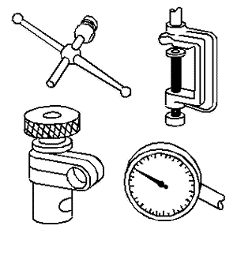
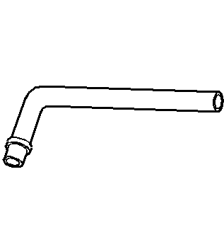
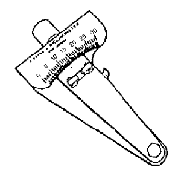
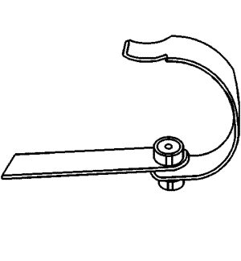
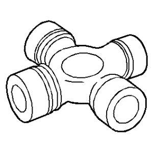
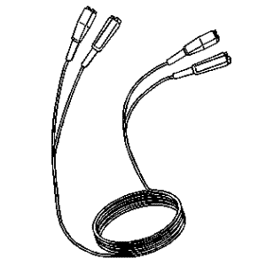
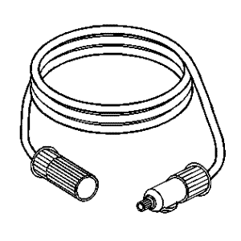

Captiva |
||||||||
|
|
|
|||||||
Ilustración | N.º de herramienta / Descripción |
|---|---|

| J 7872 Juego de reloj comparador de pie magnético |
|
 | J 8001 Juego de indicador de cuadrante |
|
 | J 23409 Extensión de reloj indicador - 7 5/8 pulg. |
|
 | J 23498-A Inclinómetro de árbol de transmisión |
|
 | J 23498-20 Adaptador de inclinómetro de árbol de transmisión |
|
 | J 35819 Indicador de alabeo de brida |

| J 38792-A Analizador Electrónico de Vibración 2 |

| J 38792-VS Software Vibrate |
|
 | J 38792-20 Extensión de cable eléctrico de luz de temporización de 20 pies |

| J 38792-25 Luz de distribución del sensor inductor |
|
 | J 38792-27 Extensión de cable eléctrico de EVA de 6 pies |
| © Copyright Chevrolet Europe. All rights reserved |